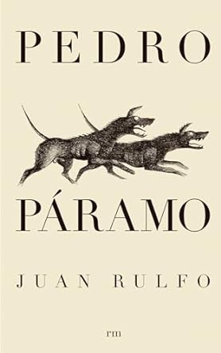

Por Juan Rulfo
"Pedro Páramo" de Juan Rulfo es una novela seminal del realismo mágico que narra la búsqueda de Juan Preciado por su padre en el pueblo desolado de Comala. A través de una estructura fragmentada y una atmósfera surrealista, Rulfo explora temas de poder, culpa y desesperanza en una obra que ha dejado una profunda huella en la literatura latinoamericana.